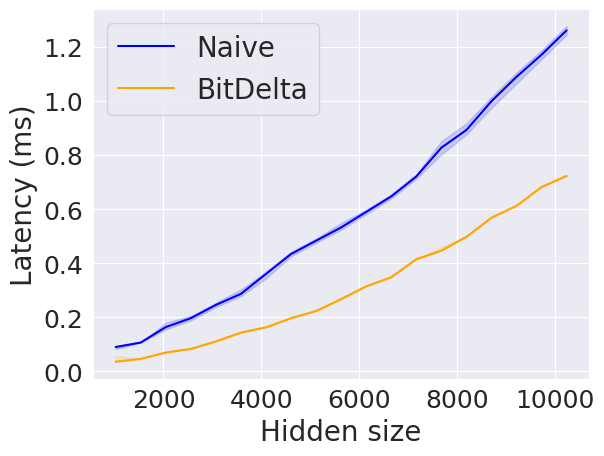
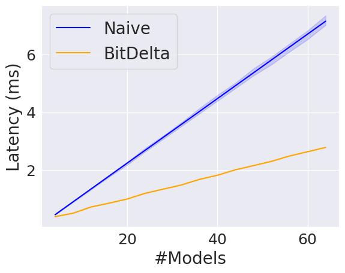
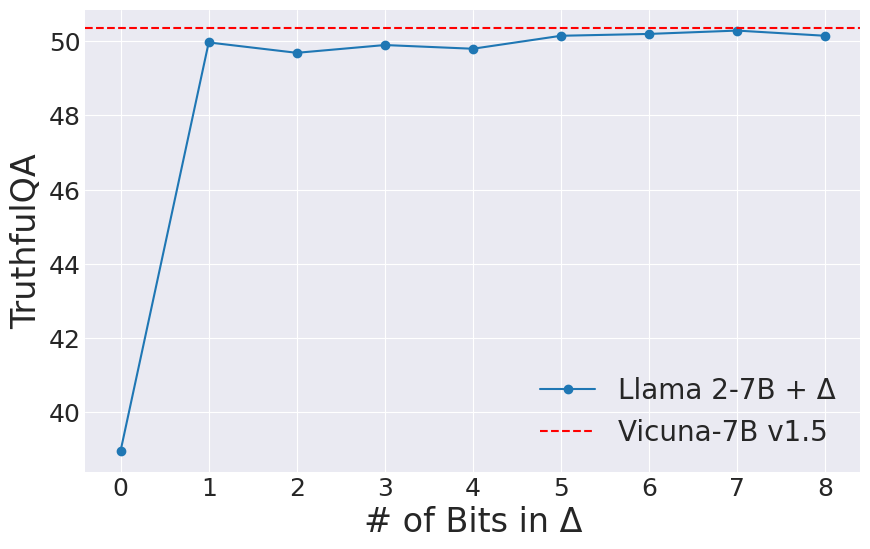

The pretrain-finetune paradigm has revolutionized machine learning; Through fine-tuning, LLMs
are adeptly equipped to align with distinct user preferences or specialized
task requirements, showcasing an unprecedented level of adaptability.
Thus, the prospect of serving millions of uniquely fine-tuned models,
each tailored to individual tasks and user needs, presents a promising vision
for the future of machine learning.
This application is known as multi-tenant serving, an architectural practice where
a single instance of software is used to serve multiple customers. In particular,
it would be ideal for multiple customers to be able to efficiently use their own
fine-tuned models, hosted on one centralized service.
However, multi-tenant serving is challenging due to two key reasons:
1) Expensive Storage. Each new fine-tuned model is large, even if we have
relatively few base models, making them expensive to store and challenging to manage on disk.
2) Expensive Serving. Distinct fine-tuned models each demand significant GPU memory,
making it difficult and expensive to concurrently serve such models without noticeable downtime.
Insight: Information Disparity in Pre-training vs. Fine-tuning
Given the higher computational demand of pre-training, it makes sense to assume that
fine-tuning adds less new information to the model. This implies that fine-tuned models
that are derived from the same base model may share a significant amount of redundant
information. Can we exploit this to address the above storage and serving challenges?
Quantization results for Vicuna-7B v1.5 with base model
Llama 2-7B. Adjusted average is over ARC, BBH, HellaSwag, Winogrande.
We highlight TruthfulQA, GSM8K, MT-Bench as the base model struggles on these tasks,
showing that BitDelta effectively retains fine-tune information.
$$
\begin{array}{lccccc}
\hline
\textbf{Model/Method} & \textbf{Train Loss} & \textbf{TruthfulQA} & \textbf{GSM8K} & \textbf{MT-Bench} & \textbf{Adjusted Average} \uparrow \\
\hline
\textit{Llama 2-7B} & -- & 38.96 & 13.57 & -- & 60.53 \\
\textit{Vicuna-7B v1.5} & -- & 50.36 & 19.03 & 6.04 & 60.51 \\
\hline
\text{BitDelta-Initial} & 0.41 & 47.63 & 19.56 & 5.67 & 60.99 \\
\text{BitDelta} & 0.052 & 49.97 & 20.17 & 5.99 & 60.68 \\
\hline
\end{array}
$$
It turns out that we can! We introduce BitDelta, which decomposes the weights of fine-tuned
models into their pre-trained
components and an additional delta: \(W_\text{fine} = W_\text{base} + \Delta \). Drawing from
this insight, we find that we can quantize this delta, which encodes the fine-tuning
information, down to 1 bit without compromising performance. We conduct experiments
over 17 popular fine-tuned models across the Llama-2 and Mistral families, and show that BitDelta
is quite general. BitDelta is fast (compression takes minutes), works for models across a
wide range of sizes (we test models between 7B and 70B parameters), and can retain all sorts of
fine-tuning information (we test SFT, RLHF, DPO, and RoPE based context extension). Check out
our paper for more details!
By representing multiple
fine-tuned models as a single high-precision base model accompanied by multiple 1-bit deltas,
we can drastically reduce GPU memory requirements. This addresses the storage challenge.
Since LLM inference is memory bound,
we can also translate this memory reduction into faster inference (2x for now)
in multi-tenant settings, using an efficient 1-bit matrix multiplication kernel!
This addresses the serving challenge.
Past work (GPT-Zip, DeltaZip) has also explored quantization of the weight delta, achieving
quantization levels as low as 2-bits by applying methods introduced by GPTQ. We find that
the weight delta is extremely compressible, and are able to achieve 1-bit quantization
with minimal performance degradation using a simpler methodology.
BitDelta Overview
1-bit quantization
Let \(W_\text{base}, W_\text{fine} \in \mathbb{R}^{n \times m}\) be weight matrices
from the base model and fine-tuned model, respectively. We define the weight delta
as \(\Delta = W_\text{fine} - W_\text{base}\), representing the modification in
weights post-fine-tuning. For efficient representation, we aim to obtain a binarized
estimator of this weight delta, denoted as \(\hat{\Delta}\), by encoding its sign bits:
$$
\hat{\Delta} = \alpha \odot \text{Sign}(\Delta),
$$
where
$$
\text{Sign}(W_{ij}) =
\begin{cases}
+1, & \text{if } W_{ij} > 0, \\
-1, & \text{if } W_{ij} \leq 0,
\end{cases}
$$
and \(\alpha\) is a high-precision scaling factor for the entire matrix. To minimize the approximation error
in \(L_2\) norm:
$$
||\Delta - \hat{\Delta}||_2^2 = \sum_{ij}(|W_{ij}|-\alpha)^2,
$$
we take
$$
\alpha = \frac{1}{nm} \sum_{ij} |W_{ij}|.
$$
Surprisingly, we find that the above quantization approach already does quite well
and retains most of the fine-tuned models' performance.
Scale distillation
Intuitively, the scaling factor \(\alpha\) plays a more significant role
in the low-bit regime, so we further optimize these scales by performing
model distillation to align the output logits of the quantized model to that
of the original fine-tuned model. More concretely, we freeze the model
weights and optimize for the following objective:
$$
\boldsymbol{\alpha}^* = \arg\min_{\boldsymbol{\alpha}} \mathbb{E}_{x \sim \mathbf{X}}\left[ \left\| \mathbf{Z}_{\text{fine}}(x) - \mathbf{Z}_{\text{bin}}(x; \boldsymbol{\alpha}) \right\|^2 \right]
$$
where \(\mathbf{X}\) is a calibration dataset, and \(\mathbf{Z}(\cdot)\) are the logits of the
respective models. We find that scale distillation is fairly insensitive to choice \(\mathbf{X}\),
as 1) the process is extremely parameter efficient, and 2) the crucial aspect of the process is
to logit match with the fine-tuned model, regardless of the actual text content. We denote the method
without scale distillation as BitDelta-Initial, and the method with scale distillation as BitDelta.
As seen in the table above, scale distillation is effective in further recovering fine-tune
performance.
Inference speedup
BitDelta achieves over 10\(\times\) compression. We can further compress the embedding and LM head layers,
but leave this to future work due to inconsistencies in tokenizer vocabularies.
$$
\begin{array}{lccc}
\hline
\textbf{Base Model} & \textbf{Size} & \Delta \textbf{Size} & \textbf{Comp. Factor} \\
\hline
\textit{Llama 2-7B} & 13.48 \text{ GB} & 1.24 \text{ GB} & 10.87 \\
\textit{Llama 2-13B} & 26.03 \text{ GB} & 2.09 \text{ GB} & 12.45 \\
\textit{Llama 2-70B} & 137.95 \text{ GB} & 8.95 \text{ GB} & 15.41 \\
\textit{Mistral-7B v0.1} & 14.48 \text{ GB} & 1.30 \text{ GB} & 11.14 \\
\hline
\end{array}
$$
Since LLM inference follows the memory-bound computation pattern where generation latency
is proportional to the GPU memory used by the model weights, this reduced memory consumption also
suggests the opportunity to improve the serving latency. For example, Punica and S-LoRA exploit
LoRA's structure and memory saving by developing a CUDA kernel that can efficiently calculate
the batched delta-activation product for low rank deltas. Similarly, we decompose the forward pass
of each linear layer as follows:
$$
X'_i = W_{\text{fine}, i}X_i \approx W_{\text{base}}X_i +
\underbrace{ \hat{\Delta}_iX_i}_\textbf{Kernel}
\label{eqn:kernel_decomp}
$$
where \(X_i\) and \(X_i'\) represent input and output features to the \(i\)-th fine-tuned model,
and the base model weight and the delta are computed separately. For a batch of requests,
\(W_{\text{base}}X_i\) can be computed with the classic batched GEMM kernel.
We implement a fused binary GEMM kernel in Triton that allows us to calculate
\(\hat{\Delta}_iX\) in a batched setting while keeping the 1-bit deltas quantized until
they are transferred to the GPU cache. This kernel fuses the dequantization operation
with the GEMM calculation, reducing the data moving overhead by a large factor!
To illustrate the speedup, we benchmark the decoding latency of our kernel,
a batched linear operation over multiple deltas with a single base model, as in
the decomposed forward pass, and compare against naively computing the forward pass
separately for each model. We ablate across the batch size and hidden size dimensions
and find that our kernel consistently achieves a ~2\(\times\) speedup.

Decoding latency vs. hidden size, assuming \(N=M\). Batch size of 8.

Decoding latency vs. batch size \(B\), assuming \(N=M=8192\).
Decoding latency of a linear layer with and without BitDelta. Blue: Naive forward pass with
\(B\) distinct fine-tuned models. Yellow: Batched forward pass with BitDelta,
corresponding to one base model and \(B\) 1-bit deltas, utilizing a Triton kernel.
Ablation Studies
Quantized base models
We apply BitDelta to Llama 2-7B Chat, and find it holds up when the
underlying base model is quantized at various levels. Because 8-bit RTN and GPTQ
work with 16-bit activations, we can keep the fine-tune weights \(W_\text{fine}\)
and scaling factors \(\alpha\) in high precision, only quantizing the base weights
\(W_\text{base}\).
FP16 + \(\Delta\) outperforms GPTQ across the board.
In the performance engineering context of multi-tenancy serving,
we would rather store a single high precision
base model with many 1-bit deltas than store many quantized fine-tuned models.
This interesting result implies that the above also holds true in the
model quality context of multi-tenancy serving.
We try using Llama 2-7B Chat as both the base model and fine-tune model,
quantizing the base model using GPTQ, and find that we're able to outperform baseline
GPTQ on many evaluations. We hypothesize this is because we can diffuse 16-bit
information into the model through high precision scaling factors, at the cost
of including a 1-bit delta.
$$
\begin{array}{llcccc}
\hline
\textbf{Base Model} & \textbf{Method} & \textbf{TruthfulQA} & \textbf{GSM8K} & \textbf{MT-Bench} & \textbf{Adjusted Average} \uparrow \\
\hline
& \text{FP16} & 45.32 & 22.74 & 6.56 & 59.81 \\
\text{Baseline} & \text{INT8 RTN} & 45.02 & 22.29 & 6.28 & 59.63 \\
& \text{GPTQ} & 44.92 & 19.48 & 5.90 & 58.67 \\
\hline
& \text{FP16 +} \Delta & 44.95 & 20.24 & 6.47 & 59.88 \\
\textit{Llama 2-7B} & \text{INT8 RTN +} \Delta & 44.71 & 19.86 & 6.16 & 59.85 \\
& \text{GPTQ +} \Delta & 42.52 & 19.94 & 6.02 & 59.22 \\
\hline
\textit{Llama 2-7B Chat} & \text{GPTQ +} \Delta & 44.63 & 22.14 & 6.11 & 59.17 \\
\hline
\end{array}
$$
Varying fidelity of \(\Delta\)
By successively applying BitDelta, treating the compressed model from the
previous iteration as our base model, we can vary the granularity over the delta,
associating it with multiple 1-bit masks. One advantage of doing this is the
ability to assign arbitrary scale factors to each 1-bit mask. In contrast,
when just increasing the bit size, scale factors are implicitly fixed with respect
to each other. The figure shows how the TruthfulQA of Llama 2-7B
plus an increasingly granular delta approaches that of Vicuna-7B v1.5.

Future Work
There are many exciting directions for future work. On the model quality side, we can
incorporate saliency aware quantization in the weight deltas, similar to
AWQ (Ji et. al.). On the compression side, we can investigate sub 1-bit quantization methods
that maintain hardware-friendliness. On the serving side, we can further optimize the Triton kernel;
it is actually fairly slow compared to the theoretical upper bound, considering
small memory footprint of weight deltas. With further optimization, it should be possible to
achieve a ~4-8\(\times\) speedup. Finally, the idea of calibrating certain scale factors
through distillation may be applied more generally to PTQ methods, which we hope will
make low-bit quantized LLMs more robust.
BibTeX
@misc{liu2024bitdelta,
title={BitDelta: Your Fine-Tune May Only Be Worth One Bit},
author={James Liu and Guangxuan Xiao and Kai Li and Jason D. Lee and Song Han and Tri Dao and Tianle Cai},
year={2024},
eprint={2402.10193},
archivePrefix={arXiv},
primaryClass={cs.LG}
}